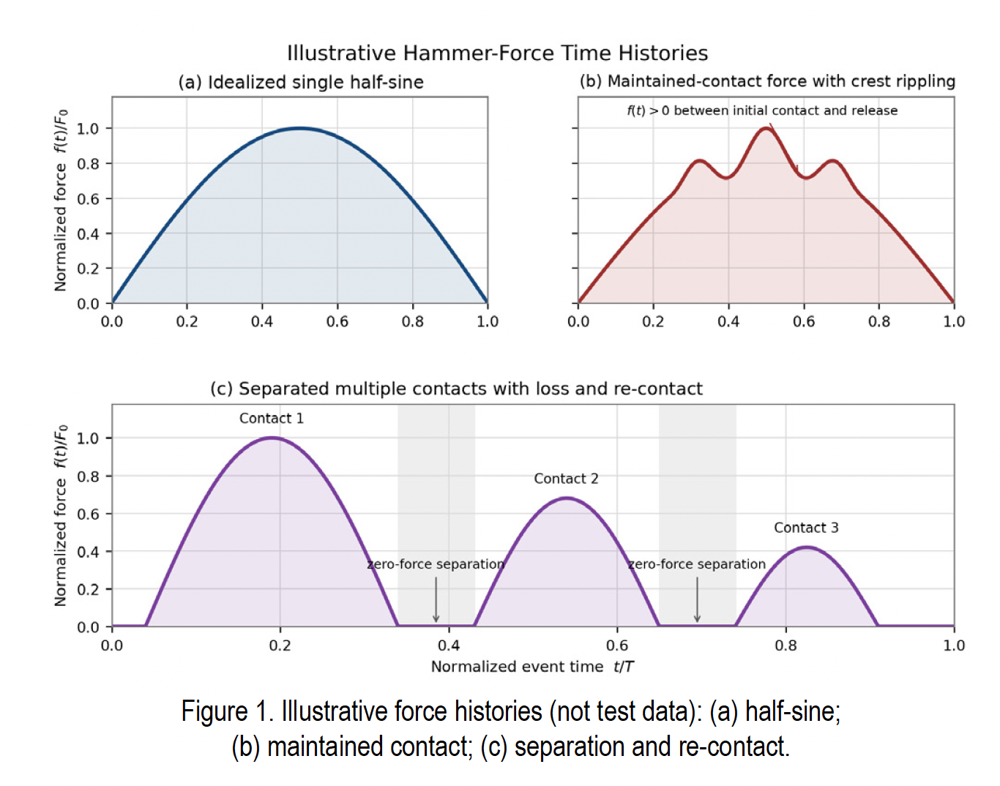

01
Léo Ortiz dá declaração sincera ao falar sobre o jogo o clássico entre Flamengo x Vasco
Terra · 03/11/2026 · 11:46 (Brasília)Fonte original ↗
 Rondoniaovivo.comCAIU NO RIO: Criminosos mantém vítima refém e tentam atravessar Hilux para a Bolíviawww.msn.comMastantuono iguala início de Alexandre Pato na Itália e brilha com a camisa da Fiorentina
Rondoniaovivo.comCAIU NO RIO: Criminosos mantém vítima refém e tentam atravessar Hilux para a Bolíviawww.msn.comMastantuono iguala início de Alexandre Pato na Itália e brilha com a camisa da Fiorentina CidadeVerde.comUespi participa de programa de gestão da educação superior na Chinawww.msn.comAvião procedente de Israel faz pouso de emergência após ameaça de bombahttps://www.futuristsspeakers.com/Best International Keynote Speakers 2027: #1 Scott SteinbergBBCO zeptoverso: o que é e como transformará a física?Jordan NewsJerusalem Governorate: 3 Homes Face Demolition Orders...CidadeVerde.comUespi é a primeira universidade brasileira em programa de gestão na Chinawww.msn.comAutossuficiência durante três dias, educação para a preparação e comunicação mais eficaz. Bruxelas apresenta novas indicações para situações de criseGazeta do CerradoVladimir Costa voltará a ser o secretário de Segurança Pública; Vicentinho pede combate a facções e delegacias 24 horas para mulheres funcionandoAfrican UnionAdvancing Africa’s Path Towards Zero Hunger Through Stronger PartnershipsVocalO Ningen: o gigante sem rosto sob os mares congelados da AntárticaMiddle East EyeMorning update
CidadeVerde.comUespi participa de programa de gestão da educação superior na Chinawww.msn.comAvião procedente de Israel faz pouso de emergência após ameaça de bombahttps://www.futuristsspeakers.com/Best International Keynote Speakers 2027: #1 Scott SteinbergBBCO zeptoverso: o que é e como transformará a física?Jordan NewsJerusalem Governorate: 3 Homes Face Demolition Orders...CidadeVerde.comUespi é a primeira universidade brasileira em programa de gestão na Chinawww.msn.comAutossuficiência durante três dias, educação para a preparação e comunicação mais eficaz. Bruxelas apresenta novas indicações para situações de criseGazeta do CerradoVladimir Costa voltará a ser o secretário de Segurança Pública; Vicentinho pede combate a facções e delegacias 24 horas para mulheres funcionandoAfrican UnionAdvancing Africa’s Path Towards Zero Hunger Through Stronger PartnershipsVocalO Ningen: o gigante sem rosto sob os mares congelados da AntárticaMiddle East EyeMorning update BBC EuropeSix flights across Europe searched after suspected bomb threatsFolha VitóriaAgência capixaba vai à China buscar fornecedores para fábrica da GWMNotícias AgrícolasUSDA anuncia vendas de 451 mil toneladas de milho ao México e Coreia do Sul e 134 mil toneladas de sojaInfonetEstácio debate diversidade e combate à violência contra a mulher em evento
BBC EuropeSix flights across Europe searched after suspected bomb threatsFolha VitóriaAgência capixaba vai à China buscar fornecedores para fábrica da GWMNotícias AgrícolasUSDA anuncia vendas de 451 mil toneladas de milho ao México e Coreia do Sul e 134 mil toneladas de sojaInfonetEstácio debate diversidade e combate à violência contra a mulher em evento BBC WorldTrump retirará Ruanda e África do Sul do acordo comercial dos EUA
BBC WorldTrump retirará Ruanda e África do Sul do acordo comercial dos EUA MashableNASA pede ajuda à indústria espacial comercial para salvar o lendário Telescópio Espacial HubbleFirstpostNão há um poder único, não há uma ordem única: o Ocidente já não dá as ordensPalestine ChronicleToday’s Headlines: Hebron Withdrawal | Carlson’s Nuclear Strike Warning | ‘Ugly Election Aftermath’O POVOCatar diz que EUA e Irã analisam propostas para acordo e busca reduzir divergênciasDemócrataA UE reúne os seus aliados para acordar os próximos passos rumo à paz na UcrâniaUOL NotíciasMulheres ocupam menos de um terço dos cargos de gestão empresarial, diz ONUCidadeVerde.comHomem de 58 anos morre após cair de motocicleta na BR-222 em BatalhaFBC NewsSingh questions government prioritiesDongA ScienceInstituto de Pesquisa Polar da Coreia identifica enzima que funciona em condições antárticas frias e com alto teor de salIndexBoxMinistério do Comércio do Catar e Qatar Post assinam acordo para oferecer licenciamento de empresas pela Janela Única - Notícias e Estatísticas
MashableNASA pede ajuda à indústria espacial comercial para salvar o lendário Telescópio Espacial HubbleFirstpostNão há um poder único, não há uma ordem única: o Ocidente já não dá as ordensPalestine ChronicleToday’s Headlines: Hebron Withdrawal | Carlson’s Nuclear Strike Warning | ‘Ugly Election Aftermath’O POVOCatar diz que EUA e Irã analisam propostas para acordo e busca reduzir divergênciasDemócrataA UE reúne os seus aliados para acordar os próximos passos rumo à paz na UcrâniaUOL NotíciasMulheres ocupam menos de um terço dos cargos de gestão empresarial, diz ONUCidadeVerde.comHomem de 58 anos morre após cair de motocicleta na BR-222 em BatalhaFBC NewsSingh questions government prioritiesDongA ScienceInstituto de Pesquisa Polar da Coreia identifica enzima que funciona em condições antárticas frias e com alto teor de salIndexBoxMinistério do Comércio do Catar e Qatar Post assinam acordo para oferecer licenciamento de empresas pela Janela Única - Notícias e Estatísticas Correio do PovoTrump anuncia corte de US$ 3,8 bilhões em ajuda anual à segurança de Israel
Correio do PovoTrump anuncia corte de US$ 3,8 bilhões em ajuda anual à segurança de Israel UOL EconomiaMariana Barbosa: FMI alerta países endividados: crescer não basta para sair da criseLANCE!Copa da Ásia é adiada após ataques na Arábia Saudita; veja novas datasGZHAlta do ICMS de combustíveis vira cavalo de batalha de adversários políticos; entenda a distorção do debate
UOL EconomiaMariana Barbosa: FMI alerta países endividados: crescer não basta para sair da criseLANCE!Copa da Ásia é adiada após ataques na Arábia Saudita; veja novas datasGZHAlta do ICMS de combustíveis vira cavalo de batalha de adversários políticos; entenda a distorção do debateO mercado financeiro elevou as projeções para a taxa básica de juros (Selic), a inflação e o dólar neste ano e reduziu, pela terceira semana consecutiva, a estimativa de crescimento da economia. Os dados constam do Boletim Focus, relatório semanal divulgado pelo Banco Central com projeções do mercado financeiro para inflação, câmbio, taxa Selic, entre outros indicadores. Notícias relacionadas: Após cinco meses, conta de luz voltará à bandeira verde em outubro. Neste primeiro boletim após o resultado das eleições presidenciais, a projeção para a taxa básica de juros (Selic) ao final de 2026 passou de 13,25% na semana passada para 13,5% – mesmo
The Ningen: O gigante sem rosto sob os mares congelados da Antártida Vocal
A medida ocorre apenas uma semana depois de o Ministério da Defesa do Ruanda ter sido atingido por sanções do Tesouro dos EUA.
Não há um poder único, não há uma ordem única: o Ocidente não dá mais as ordens. Primeira postagem
Singh questiona prioridades do governo FBC News

Atacante do Tenerife, de 30 anos, teve parada cardíaca após sofrer colisão com goleiro durante partida da segunda divisão espanhola.
Cinco golpes internacionais memoráveis de Glenn Maxwell quando o batedor australiano anunciou sua aposentadoria do críquete internacional.
A Agência Nacional de Vigilância Sanitária (Anvisa) determinou a interdição parcial do Brasil Terminal Portuário S.A. (BTP), localizado no Porto de Santos (SP) , após identificar irregularidades sanitárias durante inspeção de rotina baseada em análise de risco. A resolução da Gerência-Geral de Portos, Aeroportos, Fronteiras e Recintos Alfandegados da agência foi assinada em 29 de outubro e publicada na edição desta terça-feira (3) do Diário Oficial da União . Notícias relacionadas: Anvisa aprova 5 novas canetas para tratamento de diabetes e obesidade. Anvisa suspende venda de linguiça defumada após detecção de bactéria. Anvisa suspende propag

O ataque a Donovan Marx, 50 anos, ocorre num momento em que grupos de direita dizem que há um genocídio de pessoas brancas – uma afirmação amplamente desacreditada.

APOD Science APOD APOD: 2026 3 de novembro –… Arquivo APOD de hoje Índice de envios Pesquisar Calendário RSS Educação Sobre Discutir APOD Astronomia Imagem do dia Descubra o cosmos! Cada dia é apresentada uma imagem ou fotografia diferente do nosso fascinante universo, juntamente com uma breve explicação escrita por um astrônomo profissional. Cometa PanSTARRs e […]
Tribunal francês abre investigação sobre queixa de greve em Beirute – Asharq Al-Awsat UA.NEWS
O Super Tufão In-fa desenvolveu um olho incomumente grande, e os remanescentes do Tufão Champi fizeram a transição para uma tempestade extratropical que atingiu o Alasca.

Autoridades norte-americanas descreveram os ataques à Ilha Qeshm como limitados e defensivos, segundo a CBS, parceira norte-americana da BBC.
El Niño retorna: Do sinal climático ao risco soberano T. Rowe Price
Um terremoto de magnitude 5,6 atingiu vasta área do centro e oeste da Colômbia na madrugada desta terça-feira (3), ferindo pelo menos uma pessoa e causando danos, segundo autoridades. Moradores correram para as ruas ao sentirem o tremor no departamento de Tolima, como mostram vídeos postados nas redes sociais. Notícias relacionadas: Terremoto no Tibete deixa pelo menos 16 pessoas mortas. Forte terremoto sacode o Panamá; operações do canal seguem normalmente. O terremoto ocorreu a uma profundidade de cerca de 19 km na cidade de Chaparral, segundo o Serviço Geológico da Colômbia. Uma pessoa ficou ferida pela queda de uma parede em uma residênci

Ataques nucleares versus ataques convencionais no Irã: viabilidade militar, consequências e escalada estratégica até 2028 https://debuglies.com
Uganda retira as suas tropas da Somália enquanto a luta contra os rebeldes persiste França 24
A confiança do varejo dispara sob o nível nacional, em risco sob o Labor Mirage News
ZAWYA: Nigéria pressiona a Rússia para investimento e transferência de tecnologia na África TradingView
Há sessenta e cinco anos, uma visão ousada criou raízes em Houston: um centro da NASA dedicado a voos espaciais tripulados. Desde a sua fundação, o Centro Espacial Johnson da NASA ajudou a liderar o programa de voos espaciais humanos do país, apoiando missões do Projeto Mercury através do Artemis. Hoje, Johnson atua como Centro de Excelência para Voos Espaciais Humanos da NASA, e sua força de trabalho está ajudando [...]
Australianos se preparam para altas taxas de juros em 18 anos News.com.au
Países que impõem restrições de viagem ao Quênia por causa do Ebola (atualizado diariamente) The Kenya Times

As duas aeronaves caíram a poucos metros do solo após tentarem pousar no mesmo local.

Estão a ser feitos apelos para que a defesa das ilhas Shetland seja reforçada, após o aumento dos avistamentos de traineiras russas ao largo da costa da Escócia.

Para obter mais informações, entre em contato com Joel W. Sills, Centro de Pesquisa Langley, joel.w.sills@nasa.gov. Baixe a versão em PDF Um teste de martelo instrumentado não requer uma forma de onda semi-senoidal única idealizada. Quando a força e a resposta completas são medidas com precisão, as ondulações na crista e os contatos separados permanecem como entradas conhecidas. A forma da força altera a excitação, mas não invalida inerentemente o registro. […]
Big Bag Recovery nomeia novo CEO PKN Packaging News